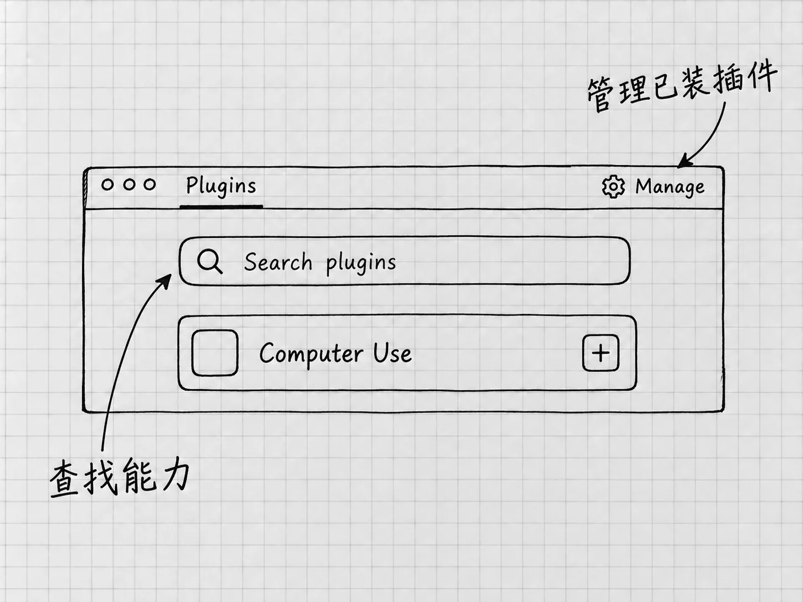

第21章 插件与MCP：接入需要的工具和资料
前面的材料都在本地文件里。要处理的资料如果保存在某个外部服务中，Codex还需要相应的连接。这时装一个合适的插件，比来回下载和上传方便。
先有明确需要，再连接相应工具。装之前想清楚两件事：这次连接要解决什么问题，它会让Codex接触到哪些材料。
插件提供什么
插件是一个可以安装的能力包，里面可能包含技能、连接工具和其他资源。技能说明怎样做，连接工具提供取得资料或执行动作的通道。各个插件的组成不同，有的不需要外部账号，有的带着好几个技能。插件组成
其中常见的一类连接叫 MCP，Model Context Protocol。对使用者来说，把它理解为模型与外部工具交换请求和结果的一套通用连接方式就可以。一个MCP服务可以提供查询资料、读取记录或执行操作的工具，具体能力由该服务决定。
使用插件不需要懂MCP开发。入门的路径是从应用里的插件目录选择需要的能力，按提示连接。直接添加MCP服务，等有可信的服务给出明确设置方法时再做。
从一个只读需要开始

图：Plugins中先查找需要的能力，再打开详情核对提供者和条件。Manage是管理入口；卡片上出现加号，不表示外部服务已经连接。
假设你在某个文档服务中保存了一份无敏感信息的测试文档，只想让Codex读出标题和第一段。这个任务小，容易核对，只需要读取权限。
打开桌面的 Plugins，搜索你实际使用的服务或需要的能力。进入详情，核对提供者、说明、支持入口和所需条件。标为 Desktop only 的插件需要桌面应用。
确认合适后，使用详情中的安装加号。需要外部连接时，按提示登录相应服务：有的在安装过程中认证，有的第一次使用时才提出。看清浏览器或授权页中的账号，以及请求访问的范围，完成后回到应用。安装与连接顺序
安装完成，再开始一个新的Codex任务，让它使用刚装好的插件。可以直接写服务名和目标，也可以在@菜单中选择当前提供的插件入口。提供准确的文档链接或标题，并限定只读：
用刚连接的文档服务，读取我指定的测试文档。先确认标题和位置，再列出第一段文字与原文链接；不修改内容，不更改分享设置，也不发送给别人。
最后到原服务打开文档，比较结果。返回的对象和内容都对，才说明这次连接对当前任务有效。手头没有外部服务账号的话，这一章可以只读不做，前面的本地文件路线照常使用。
五种状态，逐层分清
遇到「装了却不能用」，先看卡在哪一层：
| 状态 | 它说明了什么 |
|---|---|
| 已安装 | 插件包进入当前环境 |
| 已启用 | 相关技能或工具允许被当前环境使用 |
| 已登录或连接 | 外部服务认证已经完成 |
| 能访问指定对象 | 当前账号确实有这份文档或记录的权限 |
| 本次动作获准 | 这次读取、修改或其他动作符合当前授权 |
例如，你登录了一个文档账号，资料却属于另一个组织空间，仍然访问不了。插件装好以后，旧任务里也可能还没有新工具，所以官方流程要求安装后在新任务中使用。
只读一份测试文档，就把对象限定在这一份。对象明确，才容易判断它请求的权限是否与任务相符。
/mcp帮助看连接状态
在当前任务的斜线菜单中选择 /mcp，可以查看已连接的MCP服务状态。它只用于查看，安装、登录和修复要到别处做。MCP状态与设置
需要管理直接连接的服务时，进入 Settings → MCP servers。列表会显示服务是否启用，以及是否需要认证；需要登录的服务使用 Authenticate。已有服务名称相近时，先确认要处理的是哪一个。连接失败就重复添加，只会多出一条同名的记录。
可信服务若明确要求直接添加MCP，可从 Add server 开始，按照提供者给出的名称、连接类型和地址或启动方式填写，保存后使用 Restart 让设置重新加载，再完成需要的认证。这里可能看到Streamable HTTP或STDIO：前者连接服务地址，后者通常启动本地程序。来历不明的启动命令不要往里填。
网页ChatGPT与本地Codex的连接是分开管理的。电脑上配置好的服务，网页里还要另外认证。
工具能做，仍要看这次该不该做
外部服务有自己的账号权限和数据处理规则；通过Codex运行的能力也受到当前任务的权限与组织要求影响。连接成功以后，「可以读取」和「可以替我发布」仍是两回事。
例如，读出一份文档以后，可以请它起草修改意见；把意见写回原文、改变共享范围或发送给别人，是另一类动作。提出要求时写明要的是草稿还是执行，出现具体批准请求时读清对象与影响。
服务返回的内容里，也可能夹着别人写的指令。和第11章讲的网页内容一样，它们是当前任务读取的材料，你给定的目标不因此改变。
不用了，怎样关掉
临时不用某项能力，可以在对应管理界面检查启用状态，按需要关闭有关技能或连接工具。长期不需要的插件，在Plugins中打开详情，使用可用的 Uninstall plugin。组织安装或默认提供的插件可能由管理员管理，没有个人卸载入口。
卸载插件移除的是该环境中的插件包。另行建立的MCP集成可能仍然连接着，需要到对应连接管理中单独断开；还想撤回外部服务对应用的授权，就到那个服务的授权设置里核对。卸载与独立连接
已经发出的消息、已经写入外部文档的内容，卸载以后仍在原处。需要撤销某个结果，到对应服务里处理具体对象。
插件不能使用时，按安装、启用、账号、对象权限和当前任务逐层检查，比反复重装更容易找到原因。